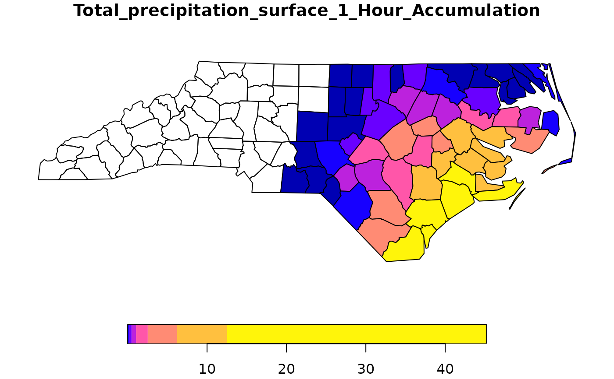
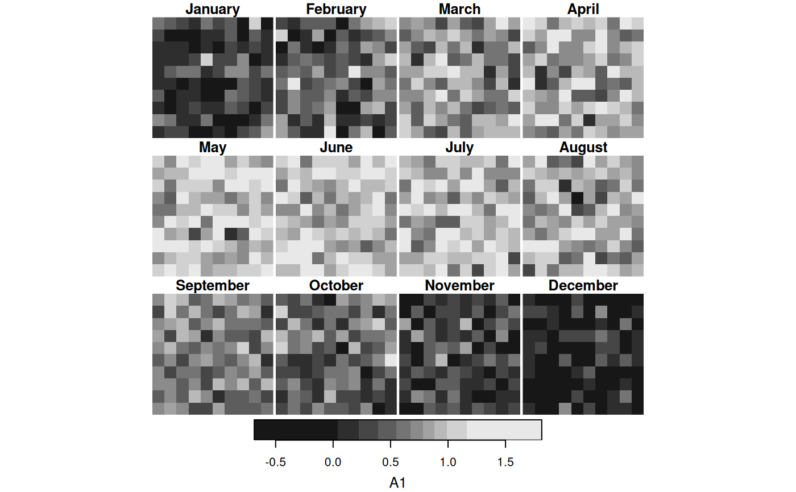

spatially or temporally aggregate stars object, returning a data cube with lower spatial or temporal resolution
Usage
# S3 method for class 'stars'
aggregate(
x,
by,
FUN,
...,
drop = FALSE,
join = st_intersects,
as_points = any(st_dimension(by) == 2, na.rm = TRUE),
rightmost.closed = FALSE,
left.open = FALSE,
exact = FALSE
)Arguments
- x
object of class
starswith information to be aggregated- by
object of class
sforsfcfor spatial aggregation, for temporal aggregation a vector with time values (Date,POSIXct, orPCICt) that is interpreted as a sequence of left-closed, right-open time intervals or a string like "months", "5 days" or the like (see cut.POSIXt), or a function that cuts time into intervals; if by is an object of classstars, it is converted to sfc byst_as_sfc(by, as_points = FALSE)thus ignoring its time component. Note: each pixel is assigned to only a single group (in the order the groups occur) so non-overlapping spatial features and temporal windows are recommended.- FUN
aggregation function, such as
mean- ...
arguments passed on to
FUN, such asna.rm=TRUE- drop
logical; ignored
- join
function; function used to find matches of
xtoby- as_points
see st_as_sf: shall raster pixels be taken as points, or small square polygons?
- rightmost.closed
see findInterval
- left.open
logical; used for time intervals, see findInterval and cut.POSIXt
- exact
logical; if
TRUE, use coverage_fraction to compute exact overlap fractions of polygons with raster cells
See also
aggregate, st_interpolate_aw, st_extract, https://github.com/r-spatial/stars/issues/317
Examples
# aggregate time dimension in format Date
tif = system.file("tif/L7_ETMs.tif", package = "stars")
t1 = as.Date("2018-07-31")
x = read_stars(c(tif, tif, tif, tif), along = list(time = c(t1, t1+1, t1+2, t1+3)))[,1:30,1:30]
st_get_dimension_values(x, "time")
#> [1] "2018-07-31" "2018-08-01" "2018-08-02" "2018-08-03"
x_agg_time = aggregate(x, by = t1 + c(0, 2, 4), FUN = max)
# aggregate time dimension in format Date - interval
by_t = "2 days"
x_agg_time2 = aggregate(x, by = by_t, FUN = max)
st_get_dimension_values(x_agg_time2, "time")
#> [1] "2018-07-31" "2018-08-02"
#TBD:
#x_agg_time - x_agg_time2
# aggregate time dimension in format POSIXct
x = st_set_dimensions(x, 4, values = as.POSIXct(c("2018-07-31",
"2018-08-01",
"2018-08-02",
"2018-08-03")),
names = "time")
by_t = as.POSIXct(c("2018-07-31", "2018-08-02"))
x_agg_posix = aggregate(x, by = by_t, FUN = max)
st_get_dimension_values(x_agg_posix, "time")
#> [1] "2018-07-31 UTC" "2018-08-02 UTC"
#TBD:
# x_agg_time - x_agg_posix
aggregate(x, "2 days", mean)
#> stars object with 4 dimensions and 1 attribute
#> attribute(s):
#> Min. 1st Qu. Median Mean 3rd Qu. Max.
#> L7_ETMs.tif 17 43 58 57.58796 70 145
#> dimension(s):
#> from to offset delta refsys point x/y
#> time 1 2 2018-07-31 UTC 2 days POSIXct NA
#> x 1 30 288776 28.5 SIRGAS 2000 / UTM zone 25S FALSE [x]
#> y 1 30 9120761 -28.5 SIRGAS 2000 / UTM zone 25S FALSE [y]
#> band 1 6 NA NA NA NA
if (require(ncmeta, quietly = TRUE)) {
# Spatial aggregation, see https://github.com/r-spatial/stars/issues/299
prec_file = system.file("nc/test_stageiv_xyt.nc", package = "stars")
prec = read_ncdf(prec_file, curvilinear = c("lon", "lat"))
prec_slice = dplyr::slice(prec, index = 17, along = "time")
nc = sf::read_sf(system.file("gpkg/nc.gpkg", package = "sf"), "nc.gpkg")
nc = st_transform(nc, st_crs(prec_slice))
agg = aggregate(prec_slice, st_geometry(nc), mean)
plot(agg)
}
#> no 'var' specified, using Total_precipitation_surface_1_Hour_Accumulation
#> other available variables:
#> lat, lon, time
#> Will return stars object with 236118 cells.
#> No projection information found in nc file.
#> Coordinate variable units found to be degrees,
#> assuming WGS84 Lat/Lon.

# example of using a function for "by": aggregate by month-of-year
d = c(10, 10, 150)
a = array(rnorm(prod(d)), d) # pure noise
times = Sys.Date() + seq(1, 2000, length.out = d[3])
m = as.numeric(format(times, "%m"))
signal = rep(sin(m / 12 * pi), each = prod(d[1:2])) # yearly period
s = (st_as_stars(a) + signal) %>%
st_set_dimensions(3, values = times)
f = function(x, format = "%B") {
months = format(as.Date(paste0("01-", 1:12, "-1970")), format)
factor(format(x, format), levels = months)
}
agg = aggregate(s, f, mean)
plot(agg)
